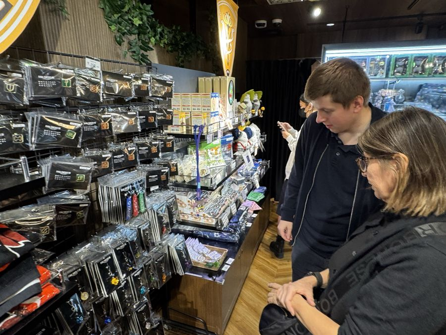
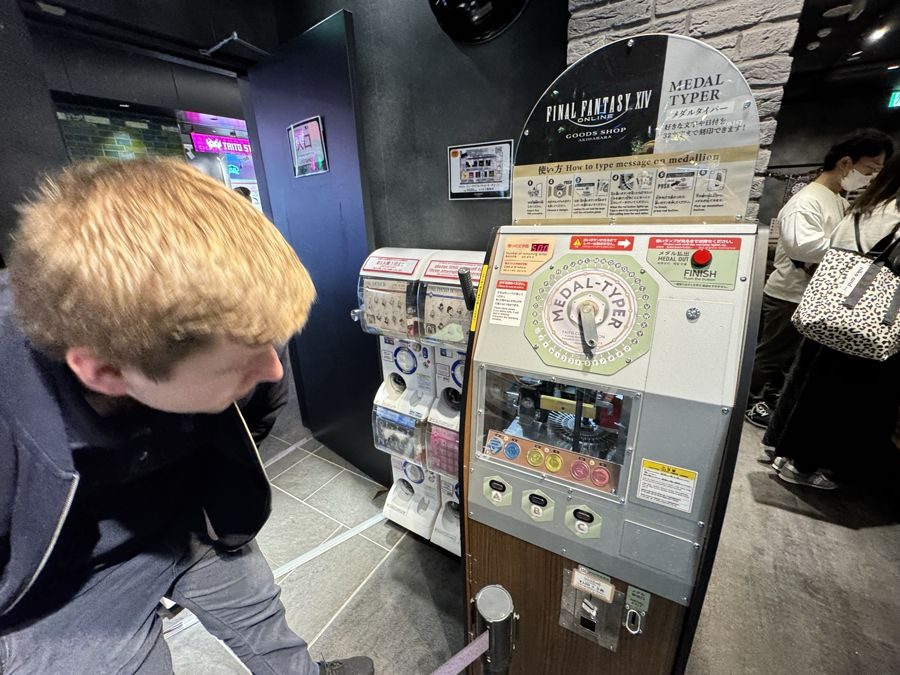
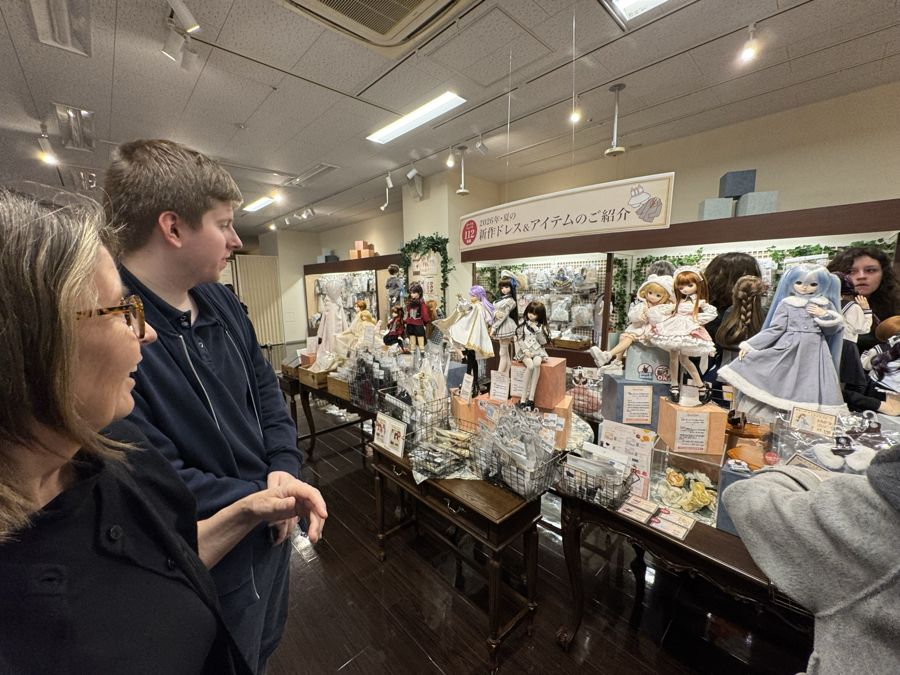
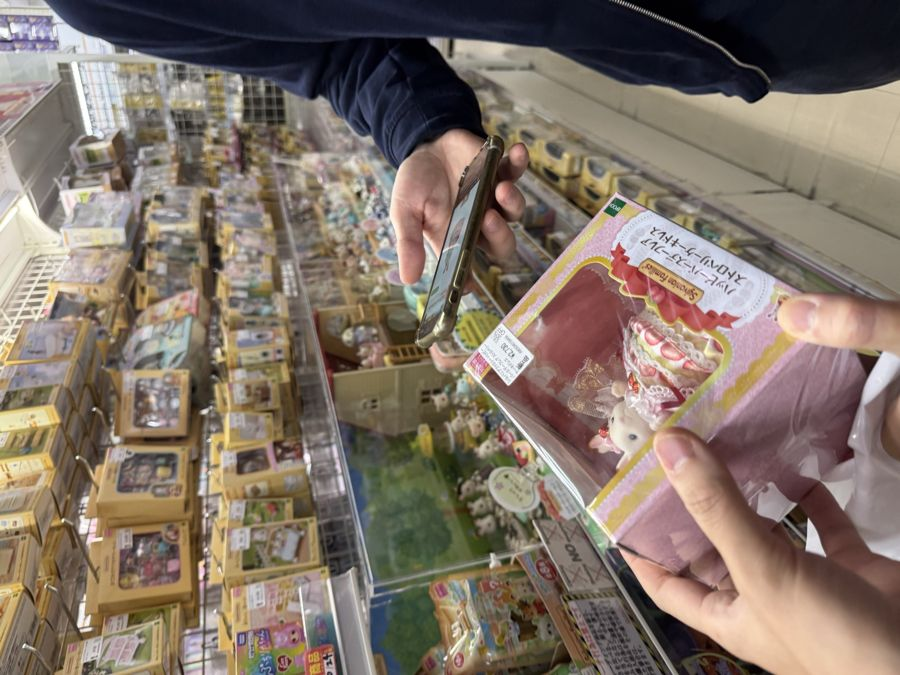
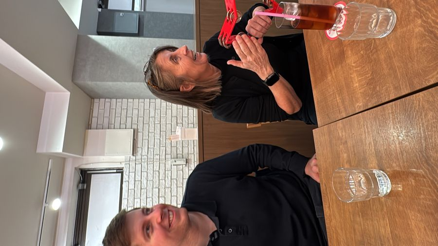
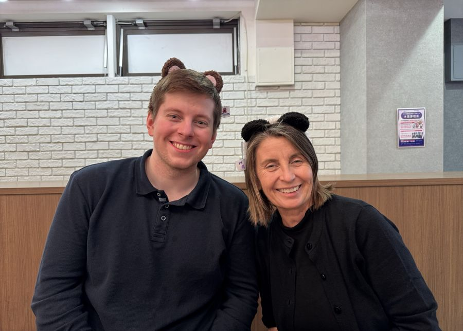
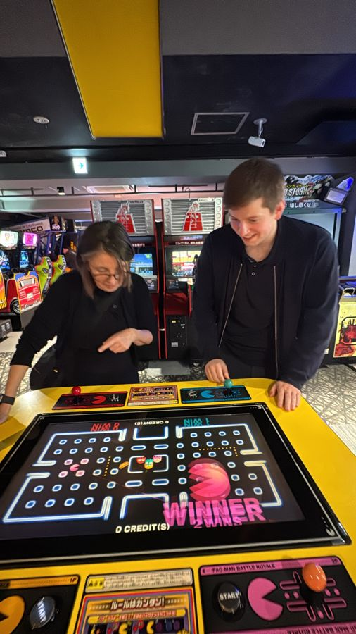
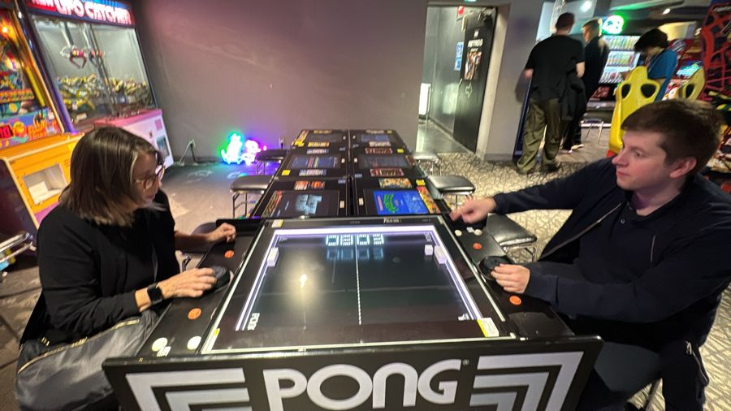
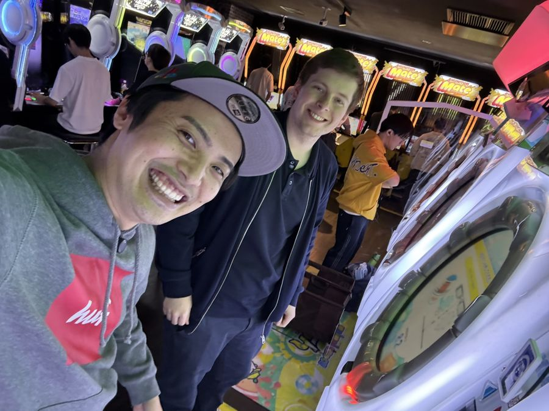
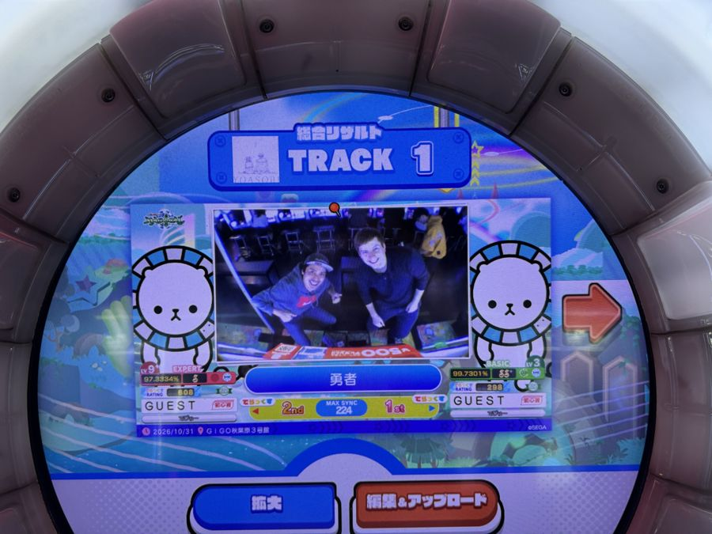

‹ ゲスト帳にもどる
ドイツ人客と巡る秋葉原
Carolaさん ・ 2026.10.31 土 ・ 14:39〜 ・ 295分 ・ 直接 ・ 録音2本を1つの読み物にまとめています
録音1 ・ 14:39〜 ・ 180分
客の家族と東京滞在2026.10.311/28
客の声
I won't be able to hold a proper conversation, but I'll survive.
旅行中の日本語力について本人の実感が語られた。客の声
I just sat for two hours and I watched the painters.
客が楽しめた過ごし方が具体的に分かる。客の声
For me this borderless team that's not the museum.
客の好みに合わせた行き先選びに役立つ。AIブートキャンプに通う若者は、大学を卒業しており、将来はエンジニアを目指している。母親は息子たちの身長や兄弟構成、明治神宮で買った就職祈願のお守りについて話す。家族の中で真ん中の兄弟が約2メートルと一番背が高いが、長兄は信じていないという冗談を交わす。ドイツのミュンヘンに住む客は、以前より東京の文化に慣れ、日本語で「こんにちは」「はじめまして」と話す。客はチームラボボーダレスが暗くて苦手だったため、ChatGPTに秋葉原へ行く前に寄れる庭園を尋ね、上野の公園で2時間ほど絵を描く人たちを眺めて楽しんだ。ユウキは自作のAIツアールートページを紹介し、客はAIをよく使うと話す。客は暗い展示施設より、伝統的な美術館や屋外の場所を好むと話す。東京滞在は3日目で月曜に出発し、その後ユウキの同行者とあと2日過ごす予定。駅では改札で問題があり、駅員に説明して出られるよう対応してもらったという。客は交通系カードでコーヒーや自販機、スーパーでも支払えると知り、クレジットカードより手数料を抑えられると話す。秋葉原には以前来たことがあり、同行者とメイドカフェに行く予定で、17歳の頃に父親に連れて行かれた思い出を語る。父親は11月に来日予定。
ポケモンカードの購入事情2026.10.312/28
客の声
An Ascendate Hero pack in English was 15 euros.
国ごとのポケモンカード価格を比べる材料。客の声
I bought it for like, I think, 10 different packs so far here in Tokyo.
客のカード購入状況が分かる。客の声
And such a pack in Germany would be like 50 euros.
日本との価格差が話題になった。客の声
I don't buy them, they're way too expensive.
空港で売られていたカードの価格への率直な反応。朱書き
And it's like on the cheaper.And it's one of the cheaper options.「安いほうの選択肢」は one of the cheaper options と言う。朱書き
I think that buying single packs in Japan is very dangerous because Japanese cars are a lot easier to detect if there's a hit.I think buying single packs in Japan is risky because it's much easier to detect which packs contain a rare card.cars はカードの誤りで、意味が伝わる自然な表現にする。客は友人のリッキーについて「コスプレではない」と話を避け、同行者はアニメを見ないが『Hunter × Hunter』や『ドラゴンボール』の話題が出る。ユウキはポケモンカードのパックを見せ、英語版では「Mega Brave」と呼ばれるカードや、ルカリオの金色カードについて話す。客はロンドンで買ったポケモンカードを開封し、ドイツでは1パック15ユーロや13ユーロする一方、日本では比較的安いと話す。ユウキは一部のカード店が18歳未満の子どもにだけパックを販売する例を紹介し、客は東京でこれまで約10種類のパックを買ったという。客はドイツではポケモンカードのパックが50ユーロほどすることもあると話し、日本のポケモンセンターでは新商品が抽選販売で、日本の電話番号などが必要な場合があるとユウキが説明する。客はドイツ語版カードの文章や響きが好みでなく、日本語か英語のカードがよいと話す。米国では再入荷時に店頭に人が殺到するという話題も出る。ユウキたちはポケモンカードの値段や、子どもの頃にポケモンを見ていた人たちが大人になってカードを買うようになった話をしている。ミュンヘンへ戻る途中、トリノの空港で日本のカードパックを1つ15ユーロで買った人は「ぼったくられた」と話し、ユウキは相手の好きなものや集めているものを尋ねている。日本ではカードの重さなどから当たりを見分けやすいため、ユウキは単品パックを避け、ポケモンセンターやコンビニで買う方法について話している。ロンドンで子どもたちが買った30パックを通りすがりの人が高値で買おうとした話も出て、ユウキは転売目的ではなくカードを楽しんでほしいと伝えている。
ポケモンの紹介とカード談義2026.10.313/28
朱書き
I mean, you have to decide what your other favorite Pokemon, right?I mean, you have to decide which other Pokémon is your favorite, right?「どのポケモンが好きか」は which を使う。朱書き
That's why you learn.That's how you learn.学び方を説明する文では how が自然。朱書き
Yeah, we don't do that. Because everybody is polite here.No, we don't do that. People are polite here.否定の返答は No が自然で、理由も簡潔に言える。朱書き
One of my kids once tried to play Pokemon cards.One of my students once tried to teach me how to play the Pokémon card game.続く話では、子どもがカードゲームを教えようとしたことが分かる。空港で迷子になったピカチュウを探す映像の話から、ユウキは相手に好きなポケモンを選んでもらおうとしている。初代は151種類で、現在は千種類以上いると説明し、ユウキのお気に入りのヤドン（Slowpoke）も紹介している。ユウキは氷タイプのポケモンや進化の例を見せ、ピカチュウにも進化先や赤ちゃんの姿があると説明している。その後、夏のレッスンを始める前にトイレへ行くか確認し、カウンターで返す物や数える物について案内しているが、案内の一部は聞き取り不確か。ユウキは店の前にできた長い列がポケモンカードを買うためのものか尋ね、カードを遊ぶ人もいるが、転売目的で買う人が多いと説明している。ポケモンに似た「Polo cards」やフィギュア店、新宿で見られる実物大の展示にも触れているが、「Polo cards」などの名称は聞き取り不確か。ユウキは限定フィギュアに人が列を作ることや、ポケモンが子どもだけでなく大人にも人気なことを説明している。客は街を破壊する大きな怪獣のような作品にも関心を示し、ユウキは子どもからカードゲームを教わろうとして難しかった経験を話している。
アニメ文化の説明2026.10.314/28
朱書き
This is a game that made in China.This is a game that was made in China.受け身の文には be 動詞が必要。朱書き
Did there some hotel there?Is there a hotel there?場所にホテルがあるか尋ねるには Is there を使う。朱書き
Also something big in Japan is like the sports anime.Sports anime are also very popular in Japan.一般的な人気を表すなら、この語順が自然。朱書き
So nowadays the actors are not only good at voicing, but also they have to be cute in real life too.So nowadays, voice actors not only need to be good at voice acting, but also have to be cute in real life.「声優」は voice actors が自然で、文の並びも整えられます。朱書き
Maybe you also know what is the Isekai is.Maybe you also know what isekai is.間接疑問文では疑問文の語順にせず、最後の is も不要です。ユウキはカードゲームのルールを理解するには時間がかかると話し、文化の違いで分からないことがあれば質問してほしいと伝えている。客は五反田のホテルに滞在しており、ユウキは日本語レッスンや電車移動について話題にしているが、後半は文が途切れている。ユウキはドイツのミュンヘンやベルリンの話題に触れた後、アニメ作品やスポーツアニメについて説明している。客は雪や侍のようなキャラクター、かわいい女の子のキャラクターに反応しているが、作品名や一部の発言は聞き取り不確か。ユウキは、アニメのキャラクターを演じる声優が現実のライブにも出演し、キャラクターに合わせた髪色や楽器演奏をすることがあると説明した。アニメと音楽、ライブ、CDやBlu-rayを組み合わせて収益を広げる「メディアミックス」や、異世界転生ものの人気について話した。一行にいるキャラクターの出自や、異世界の主人公とヒロインの違いについて話した。ユウキは、海外の人は『Demon Freak』『Naruto』『JJK』のような作品を好み、日本ではかわいい女の子が登場する作品も人気だと説明し、作品の表現がどこまで過激かも話題になった（聞き取り不確か）。
景品ゲームとカプセルトイ2026.10.315/28
朱書き
So your place should be very big, right?So your place must be very big, right?強い推量には should より must が自然です。朱書き
Another thing is really huge in Japan is gold music game.Another thing that's really popular in Japan is rhythm games.「音楽ゲーム」は rhythm games が自然で、文の形も整えられます。朱書き
You can take a picture of you or me or you know, but some not that.You can take a picture of yourself or me, but not of some of them.代名詞と語順を整えると意味が伝わりやすくなります（聞き取り不確か）。朱書き
But not only for kids, but used against many adults.But they're not just for kids; many adults use them too.「大人も利用する」という意味なら used against は不自然です。ユウキは、展示から好きなポケモンを選ぶよう相手に尋ね、イーブイや青いプリンの話をした。相手は好みを決めにくい様子で、別作品のキャラクターをポケモンだと思い違いするやりとりもあった。終盤では好きな動物やペットの有無を尋ねた。相手は以前、大きな犬を飼っていたと話し、ユウキは犬の大きさや住まいについて尋ねた。ユウキはイタリアに5週間ほど滞在した経験や、ヴィチェンツァに住む生徒について話した。写真撮影のあと、クレーンゲームは見た目より難しく、ほとんどの場合は損をすると説明した。ユウキは景品や地域違いのポケモンの話をし、欲しい気持ちを満たすなら中古店で買う方法もあると勧めた。続けて、ドラムゲームなど日本で人気の音楽ゲームや、カプセル玩具は必ず何かが当たる仕組みだと説明した（ゲーム名など聞き取り不確か）。ユウキは、カプセル玩具は必ず何かが手に入る一方、人気商品は転売されることもあると説明した。相手は商品を選んで購入し、ユウキは支払った金額や使った時間について冗談を交えながら話した。フランス風の品物にも触れたが、詳細は聞き取り不確か。
カードゲームとパチンコ2026.10.316/28
客の声
Kids get sad because he could not get the... He could not buy the... That the card that he wanted.
カード購入のルールや品切れが子どもに与える影響の話。朱書き
You look like some pianoYou look like you play the piano.人にピアノを弾きそうだと言うなら play the piano が自然です。ユウキたちは景品やスノーミューについて話し、ファイナルファンタジーの商品を探すため公式店へ行く案を出した。相手はカードゲームについて知っていると話し、子どもが欲しいカードを買えずに悲しむことや、カード用スリーブについても話題になった。店名や商品名の一部は聞き取り不確か。ユウキは、カードゲームのスターターデッキやブースターパックの購入には申込みや本人確認が必要な場合があると説明した。カードゲームは子ども向けでも、大人が有利なルールを使うことがあると話し、あとで別のゲームセンターでビデオゲームを遊ぶ案を出した。後半はピアノやディズニーカフェ、建物の見学について話した。ユウキは、店内が清潔だと建物の用途を誤解されにくいと話した。続いて、パチンコ店について、日本では賭博が違法だが、景品の金を店外のTUCで買い取る仕組みがあると説明した。
中古店で漫画やゲーム探し2026.10.317/28
一行は中古店を訪れ、ユウキは、ゲームセンターで景品を取るのが得意な男性が景品を買い取り店に売ると説明した。店にはCD、本、漫画、フィギュア、ポケモンカードなどがあり、ドイツでは漫画が10〜20ユーロほどするのに対し、日本の中古品はかなり安いと話した。ユウキはBook Offの中古漫画が1冊1ユーロ未満のこともあり、漫画を日本語学習に使うことがあると話した。子ども向け漫画には読み方が付くことが多く、大人向けには難しい漢字が多いと説明し、ひらがな・カタカナ・漢字の3種類の文字を紹介した。文字数や漢字の学習数の説明は聞き取り不確か。一行は絵本を見て、ユウキは子ども向けの本には読みやすいひらがなが使われると説明した。参加者はエリック・カールの本を見つけて喜び、記念版らしき本について「140周年」と話したが、何の周年かは聞き取り不確か。エリック・カールがアメリカ生まれでドイツで育ったという話も出た。一行は絵本やキャラクター関連の商品を見た後、上階の大人向け売り場へ移動した。ユウキは、成人向けの本には難しい漢字が使われるため、子ども向けとは内容や読みやすさが違うと説明した。途中のDVDや作品についての会話は聞き取り不確か。ユウキは、日本にはお金をかけずに過ごせる場所が多く、この店も本を読んで過ごせると話した。ドイツ人参加者は、ドイツ語から日本語への学習は文法が難しいと話し、ユウキは英語の本を示しながら、日本では英語を話せると仕事や給料の面で有利だと説明した。参加者は英語のほか、ドイツ語やスペイン語、イタリア語も少し学んだことがあると話した。
レトロゲームと商品の相場2026.10.318/28
客の声
in Germany we hardly have any bookstores left
日本とドイツの書店事情を比べる話題。客の声
the only table where I could use them was in the playground.
参加者の子ども時代の具体的な遊びの記憶。朱書き
If you buy, you should not buy Apple iPhone here.If you buy a phone here, you shouldn't buy an iPhone.可算名詞の前に冠詞が必要で、語順も自然にする。ユウキは日本には今も書店が比較的多いと話し、参加者はドイツでは電子書籍の普及などで書店が減ったと話した。一行はレトロゲーム売り場でDSや3DSを見て、参加者の弟ロレンツォが昔のゲーム機を取り出し、充電ケーブルを買った話をした。さらに、昔のベイブレードは元値より高く転売されているという話題になった。参加者は子どもの頃、学校の砂場でベイブレードを遊び、砂が回転機構に詰まった思い出を話した。ユウキは、ポケモンなどの古いゲームやカードは、箱入りの美品がコレクション品として高価になる一方、カセット単体なら安いことがあると説明した。年数や商品名の一部は聞き取り不確か。ユウキは、ゲーム機やポケモン関連商品の価格について話し、限定版は約300ユーロすることや、店によって値段が違うことを説明している。日本のiPhoneは撮影音を消せない場合があること、女性専用車両は平日のみ運行されることにも触れている。ユウキは、カードの自販機では何が出るか分からず、低い確率で珍しいものが当たると説明している。30周年のバトルセットや、販売終了後に価格が上がった商品の話をしているが、商品名や一部の説明は聞き取り不確か。
FF14の展示と秋葉原散策2026.10.319/28


客の声
I'm doing my in-game name.
同行者が刻印する内容を決めている。客の声
So the oldest is 30 and he's the youngest 25.
兄弟それぞれの年齢が分かる。客の声
I was in Ghana for three months.
同行者の海外滞在経験が分かる。朱書き
Which palette is there again?Which category was that again?選択肢の分類を尋ねる文脈では「palette」ではなく「category」が自然。朱書き
Does Momenza play this game?Does Momenza play this game?文として自然なため修正不要。朱書き
How many people can do you think you can fit here?How many people do you think can fit in here?疑問文で助動詞が重複しているため、語順を整える。一行は水を買い、ユウキが同行者の分も支払った。スクウェア・エニックスの店舗では、同行者が以前別の店舗に行ったことや、ゲーム「ファイナルファンタジー14」の展示があることを話している。同行者はゲーム内のメインジョブが「warrior」だと話し、ユウキたちは戦士の香りを想像して冗談を交わしている。ゲーム内キャラクターの見た目やアートブックにも触れ、拡張版の評価については「これは良くない」と話している。ユウキたちはゲーム関連の食品やカプセルトイを見て、同行者が500円のメダルを作る機械を試すことにした。タンクや遠隔攻撃役などの種類を見ながら、同行者はタンクを選び、500円を用意している。同行者は機械で刻印する文字を選び、ゲーム内の名前を入れることにした。ユウキが操作を案内し、同行者が刻印した名前は「gala storm harp walk」と聞き取れるが、表記は聞き取り不確か。一行は店舗の展示を見て写真を撮り、飲酒の習慣や兄弟の年齢について話した。兄弟は30歳、28歳、25歳で、子どもの頃はよくけんかをしていたという。次は上の階の店へ移動し、エレベーターの列に並んでカード店も見る予定。ユウキは、秋葉原の建物には多くの階や店があり、東京で長く暮らすと人混みや刺激で疲れることがあると話した。同行者はドイツには東京ほど大きな都市はないと述べ、ガーナには3か月滞在したものの、交通事情で歩いて移動するのは難しかったと話している。最後に、店内に何人入れるかを尋ね、同行者は表示を見て「15」と答えた。
カード購入と日本語練習2026.10.3110/28
朱書き
I don't know because today is the Saturday as you can see there are so many people so local people here know about this stuff.I don't know. Today is Saturday, and as you can see, there are so many people. The locals know about this stuff.曜日の前にtheは不要で、文を分けると自然です。朱書き
But you know, sometimes I give some packs to you guys, but if they win some rear cars, makes me feel like, you know, that's mine, right?Sometimes I give you guys some packs, but if you win some rare cards, it makes me feel like they're mine, right?rearではなくrareで、主語と動詞の形も整えます。朱書き
There are so many, more than 10 kinds of cards in Japan.There are so many different card series in Japan—more than 10.シリーズの種類を指すならkinds of cardsよりcard seriesが明確です。朱書き
Maybe you go travel.Maybe you're going to travel.予定を尋ねる文脈では、自然な進行形にします。朱書き
If you try the Pokemon Center in early morning the might be a challenge.If you try the Pokémon Center early in the morning, it might be a challenge.the mightは文法的に誤りで、時間表現にはtheが不要です。朱書き
So once you order from that searching console, that the people in this shop, they will find and they will tell you once they're ready.Once you order from that search terminal, the staff in this shop will find the cards and let you know when they're ready.searching consoleよりsearch terminalが自然で、重複した主語を整理します。朱書き
Since you stay here several weeks already makes you Japanese.Since you've been here for several weeks, you've practically become Japanese.継続して滞在しているため現在完了形が自然です。朱書き
If you wanna buy this, you have to join the competition here.If you want to buy this, you have to enter the lottery here.抽選を指すならcompetitionよりlotteryが適切です。ユウキは店の混雑や、ポケモンカードのパックの価格について客と話している。青いものは180円、緑のものは200円で、客は自分用だけでなく他のゲストへのプレゼントとして買うこともあるという。(聞き取り不確か)ユウキはカードの種類や価格の幅を説明し、同じ紙製でも希少性によって高価になると話している。客は「Vanguard」というシリーズ名を尋ね、ユウキは日本には10種類を超えるカードシリーズがあると答えた。(聞き取り不確か)客はカードパックを買うときの日本語を練習し、「これを15個と、これを10個ください」と言う表現を学んでいる。ユウキは、週末を避けて平日の午前10時か11時ごろにポケモンセンターへ行く案を話し、客は京都へ行く予定だと伝えた。ユウキはポケモンセンターの店舗や、カードを検索・注文する端末の仕組みを説明している。店員が注文品を探し、準備ができると番号で呼ぶという。客は東京駅や渋谷、池袋の店舗について話している。(聞き取り不確か)ユウキは、客が日本に数週間滞在して行動が変わったか、文化の違いを感じたか尋ねている。その後、買いたい商品の購入には抽選への参加が必要だと説明しているが、客の返答や会計の細部は聞き取りにくい。(聞き取り不確か)
注文待ちと来日予定の話2026.10.3111/28
客の声
I'm retired. What did you do? I was financial advisor.
客の仕事と現在の状況が分かる会話です。朱書き
I was just hearing how he does so you're now worrying about him staying outside of your countryI was just listening to how he does it. So, are you worried about him staying outside your country now?質問の形に直し、how he does itとすると意味が通ります。朱書き
How many packs you got?How many packs did you get?過去の出来事を尋ねる疑問文にはdidが必要です。朱書き
maybe we will be stay up there this floor so when they're ready they're gonna call my name our numberMaybe we'll stay on this floor, so when it's ready, they'll call our number.will be stayは誤りで、nameよりnumberが文脈に合います。朱書き
They are making a line up from outside the stairs.The line stretches out onto the stairs.行列が階段まで続く状況を自然に表せます。朱書き
Most of my students are American. They're from USA.Most of my students are American. They're from the USA.国名の前には定冠詞 the を付ける。朱書き
That's why, you know, I need to wake up early.That's why I need to wake up early.ここでは you know を省くと自然で簡潔。朱書き
I'm going to have this too.I'm going to get this too.注文する意味なら have より get が自然。客は、子どもたちのうち一人が南米のコロンビアに、もう一人がロンドンに住んでいると話す。客は退職後で、以前はファイナンシャルアドバイザーだったという。買い物では、2つ頼んだつもりが10個ほど渡され、760円を支払ったらしく、ユウキたちは多く渡された可能性について話している。(聞き取り不確か)ユウキは、店内の商品を探すには時間がかかるが、検索端末や別の店のiPadで検索・注文できると説明している。客は780円の商品をきれいだと話し、好きな絵柄としてフルカラーのものを挙げた。注文後、番号465が表示されたという。(聞き取り不確か)一行は別の店に移り、ユウキはHololiveから日本語を学ぶ人もいると話している。店内では人が階段の外まで並んでおり、客は番号465が黄色く表示されているのを見て、注文品ができたのか尋ねた。(聞き取り不確か)ユウキたちは呼び出し番号465を待ちながら、好きな5人組のガールズグループや新曲について話す。会場には日本人だけでなく外国人も多く、男性客のほうが多いようだと話し、番号463が呼ばれたのを見て次は自分たちかもしれないと待つ。ユウキはオンラインの個人レッスンをしており、アメリカ人の生徒が多いため、今朝は午前5時に起きたと説明する。生徒が日本語を学ぶ理由はアニメやゲーム、日本に住みたいなどさまざまだと話し、番号465の呼び出しや商品の確認をする一方、後半はカードやスリーブの話になっているが一部聞き取り不確か。ユウキたちは番号465の言い方をきっかけに、日本語の数え方や「ひとり・ふたり」など助数詞の違いについて話す。昼食は遅い朝食だけだったという相手に、オムライスとケチャップの話をしながら何か食べようと提案する。
ゲームや音楽のチケット談義2026.10.3112/28
朱書き
Speaking of PC, I built myself with my hotel for my brother a very good PCSpeaking of PCs, I built a very good PC for my brother at my hotel.built の目的語と場所・相手の語順を整える。朱書き
You don't have any specificity, your favorite singer or something?Do you have a favorite singer or someone specific you listen to?specificity の使い方が不自然で、質問文の形も整える。朱書き
I was also asking him, he say, social media, the Instagram account, Kozuno.I also asked him for his social media account, his Instagram.過去の質問なので asked を使い、語順を自然にする。相手は日本に来たことのある兄と、11月に来日して京都にも行く予定の兄について話す。兄は日本のアニメやゲームには特に詳しくないが、ドイツで『League of Legends』のトップ500に入るほど競技的にプレイしており、ユウキは自分で組んだPCの話を始める。ユウキは兄のPCについて、以前は3,400ユーロだったものが今なら5,000ユーロほどになり、AIの影響でHDDも高くなったと話す。相手は日本の音楽フェスの抽選やチケット購入の難しさ、日本の電話番号や身分証が必要なことを説明し、次回はユウキに相談できるかもしれないと話す。ユウキは相手が行きたいコンサートのチケットを買う際、日本の知り合いがいなかったため手に入れられなかったと説明し、次回は自分に相談してほしいと話す。二人はInstagramのアカウントを交換してフォローし、その後、犬やトイレに行くかどうかについて話す。
ドール探しと昼食の相談2026.10.3113/28


客の声
I love Chikawa too.
客の好みが分かり、次の会話のきっかけになる。朱書き
you can make them to have the bigger whoopie boobs or somethingYou can give them bigger boobs or something.make them to have は不自然な使役表現。朱書き
It's in the building. I don't think it's limited, so I can just go occasionally and see.It's in the building. I don't think it's limited, so I can just stop by occasionally and have a look.店に立ち寄って見る意味では stop by が自然。相手はこの場所には観光客が少なく、自分が見かける中ではかなり年上だと話す。ユウキはドール文化を紹介し、髪や目などを替えて楽しむ人がいると説明するほか、シルバニアファミリーを探し、ケチャップで絵を描いてもらえるオムライスやメイドカフェの昼食を提案する。ユウキたちは建物内の店を見て回り、シルバニアファミリーの商品を探すが、どの店にあるかは分からず聞き取り不確か。東京の公式店についても触れ、建物は9階建てで全フロアを見るには時間がかかると話した後、大きなハロウィーン仕様のいちごケーキを見かける。ユウキは店で客と一緒に商品を探し、写真やバッグが必要か確認した。客は「ちいかわ」が好きだと話し、ユウキは会計に進もうとしたが、最後の「4,000,000,000」は聞き取り不確か。
メイドカフェで昼食2026.10.3114/28
客の声
what do you usually cook and eat back in Germany
客の食の好みが分かり、話を広げやすい。客の声
They're not picky.
家族の食の好みが分かる。朱書き
We'll give you a 60 minutes.We'll give you 60 minutes.時間の長さを表す名詞の前に冠詞は不要。朱書き
And so we order here already what we want to eat.So, we can order here now. What would you like to eat?語順が不自然で、客への質問として伝わりにくい。朱書き
If you wanna order the omurice itself, that's gonna be 14 instead of the 39.If you want to order the omurice by itself, it costs 14 instead of 39.「単品で」はby itselfが自然で、価格説明も簡潔になる。朱書き
And the combo what is it?And what does the combo include?セットの内容を尋ねる自然な語順。朱書き
you cannot take a picture of girls and the other customers about yourself in the food hereYou can't take pictures of the staff or other customers in the café.撮影禁止の対象と場所を自然で分かりやすく言える。朱書き
if you're lucky they might do some close out live here like once once an hourIf you're lucky, they might have a live show here about once an hour.「ライブを行う」はhave a live showが自然。朱書き
If you wanna ask two or three girls, which means you need to buy more tickets.If you want to take pictures with two or three girls, you'll need to buy more tickets.何をするための券かを明確にし、条件を自然に説明できる。ユウキたちは階下へ移動し、メイドカフェで昼食を取ろうとした。ドイツ出身の客はイタリア料理をよく作ると話し、日本ではチーズが高いという話題になった。ドイツではビールが水より安いことがあるかを話し、客は「水より安いわけではない」と訂正した。子どもたちの好き嫌いや、イタリアで内臓料理を食べた話も出たが、料理名の一部は聞き取り不確か。ユウキはメイドカフェの料金や注文方法を英語で説明しようとした。セットには食事、飲み物、メイドとの写真が含まれると案内したが、オムライスやカレーの品切れ状況は説明が混乱し、聞き取り不確か。ユウキはオムライス単品とセットの違いを説明し、客にカレーや飲み物を選んでもらった。セットには食事、飲み物、写真などが含まれると案内したが、注文のやりとりには聞き取り不確かな箇所がある。ユウキは追加で客を驚かせる注文をすると話し、店内ではメイドや他の客を撮影できないこと、セット注文ではメイドとの写真撮影ができることを説明した。店内でライブやダンスが行われることも案内したが、説明の一部は聞き取り不確か。ユウキはセットの写真券でメイドを1人選び、2人で一緒に撮影できると説明した。写真を撮る相手や料金の説明には混乱があり、後半では店内の音楽や昼食の話をした。
メイドカフェの体験とライブ2026.10.3115/28


客の声
I don't find it embarrassing. But maybe kids find it.
体験を恥ずかしいと感じるかどうかは人によって違う。客の声
So what's your impression? It's fun! It's fun!
体験直後の率直な感想。客の声
I think my brother has to come here.
同行していない家族にも勧めたいという反応。客の声
Can I just have hearts?
動物以外の希望も出てきた場面。朱書き
You can shoot only human drinksYou can only take pictures of people and drinks.shootはこの場面の撮影を表すには不自然。朱書き
I'm going to put it in a hand.I'm going to put it in your hand.「誰の手に」渡すのかを示す必要があります。朱書き
So now you want to pick for yourself for now?So, do you want to pick one for yourself now?質問の語順を整え、「今、自分用に選ぶ？」と自然に聞けます。朱書き
Are you sure that I can drink this one?Are you sure I can drink this?この確認では that と one はなくても自然です。朱書き
You should wear it today, the whole time. Until you go back home.You should wear it all day, until you go home.「一日中」は all day とすると自然です。朱書き
I don't find it a dressing, I find it funny.I don't think it's embarrassing; I think it's funny.文脈上は「恥ずかしい」ではなく「面白い」と対比しています。朱書き
last time I guided the other guests with a teenager, one of the boys got really impressed with that.Last time, I guided another group with a teenager, and one of the boys was really into it.人が体験を楽しんだ意味なら was really into it が自然です。朱書き
Would you like to have the data, the smartphone, or you can also have the Polaroid camera?Would you like the digital photos, or would you prefer a Polaroid photo?選択肢を並列にし、data より digital photos とすると伝わりやすいです。朱書き
He's like an uncle. Only he's like a teenager, like 17, 18 years old.He's like an uncle, but he's only about 17 or 18.Only の位置を整えると対比が明確になります。朱書き
That's why it takes time. You have to be adult.That's why it takes time. You have to be an adult.adult を名詞として使うので an が必要です。朱書き
That's a same free novelty that, like, you can get for free.That's the same free souvenir you can get.same の前に the が必要で、novelty より souvenir が自然です。朱書き
I bet you put it between those two boxes we have.I bet you can put it between those two boxes.置き場所の提案には can put が自然です。朱書き
You think your brother can also have fun?Do you think your brother would enjoy it too?相手の予想を尋ねる自然な質問表現です。朱書き
You can request her what animal you do like her to draw.You can tell her what animal you'd like her to draw.request の使い方と語順を直すと自然です。朱書き
So you can take a picture video only without showing the heart.You can take a photo or video without showing the heart.picture video の並びを photo or video に整えます。朱書き
What animal is your line?What animal would you like?希望する動物を尋ねる簡潔な表現です。朱書き
Why the cat holding heartWhy is the cat holding a heart?疑問文には be 動詞が必要で、heart の前に a を置きます。朱書き
Now the live concert is coming. The starting.The live concert is starting now.進行中の開始には be 動詞と starting を使います。朱書き
why don't you use this stuff?Why don't you use this?指している物を勧めるなら this が簡潔です。メイドが飲み物に絵を描きながら魔法の演出をし、ユウキたちはハートのポーズなどに合わせて盛り上がった。ユウキは会計後にメイドと写真を撮りたいと伝え、さらにリズムに合わせた演出を始めた。ユウキは相手の言葉をまねして手振りをし、次の体験へ進むよう促している。レンタル用の動物カチューシャを選ぶ話になり、若い客は恥ずかしがることもあると説明した後、客が試着してよいか確認している。(聞き取り不確か)客は小さいカチューシャを試し、別のものを選んで盛り上がっている。ユウキは持ち帰れる品も選べることや、帰宅まで着けてみるよう案内し、以前案内した17〜18歳ほどの客も楽しんでいたと話した。ユウキはステージ上で写真を撮る提案をし、スマートフォンかチェキを選べると説明した。以前案内した17〜18歳ほどの客の話を振り返り、楽しんだ人もいれば恥ずかしがって「家に連れて帰って」と座り込んだ人もいたと話している。(聞き取り不確か)ユウキは無料でもらえるノベルティや、使った小物をかごに入れる場所について話している。客は体験を「楽しい」「かわいい」と感じた様子で、兄弟も連れて来たいと話したが、後半は聞き取りにくい。(聞き取り不確か)ユウキは描いてほしい動物をリクエストできると案内し、客は「くま」を希望した。ライブコンサートが始まり、景品や飾りを作る話、ハロウィンの話題が続き、次の客はハートを描いてほしいか尋ねている。(聞き取り不確か)客はハートを描いてほしいと繰り返し、ユウキはできると応じている。続く部分はツアーや同行者について話しているようだが、whisperの誤認識が多く内容を確定できず、写真撮影や「meow meow」の声かけが続く。(聞き取り不確か)ユウキはライブコンサートの開始を告げ、ライトスティックを使うよう客に勧めている。冒頭から中盤は「Hi」などの声が続き、細部の聞き取りは難しい。(聞き取り不確か)
録音2 ・ 17:39〜 ・ 115分
メイドカフェのショーと撮影ルール2026.10.3116/28
歌詞のような英語(「I'm so happy to be here」など)が延々と繰り返されていて、人同士の会話はほぼ聞き取れない。店内BGMかライブの音を拾った可能性が高い(推測、聞き取り不確か)。歌詞の繰り返しのあと、店のスタッフらしき声が撮影ルールを案内している。写真と動画はOKだが自分の角度からの撮影は禁止、SNSにはハッシュタグMaydreamを付けて投稿を、と呼びかけ、「Music start!」でショーが始まる。ユウキ本人の発言かどうかは不明(聞き取り不確か)。
注文の行き違いとAirDrop2026.10.3117/28
客の声
I can always come back here
気を遣いつつ、また来る前提で楽しんでいる本音客の声
I have sensory overload
刺激が強すぎるサイン。ツアーの終わり方や休憩のタイミングを調整する材料「I'm so happy to be here」の繰り返しが続くなか、同席者が「注文は来ているかな」と話し、「Meow meow」という猫っぽい掛け声も入る。食べ物がまだ来ていないらしく、カメラの話も出る(聞き取り不確か)。同席者の料理が注文されていなかったらしく、本人は「あとで食べられるから大丈夫」と気にしていない。ユウキ側は、頼んでいないものの分を払わないよう確認しようとしている。写真や動画の共有の話も出る(聞き取り不確か)。撮った写真と動画をAirDropで送ろうとするが、Wi-Fi設定や古いiPhoneのせいでうまく届かない。ユウキは「AirDropはたいてい不調」と言い、あとでアルバムを作って共有すると約束している。ドイツの「home rice」の話も出る(聞き取り不確か)。AirDropの相手を探すため、電話番号や名前を確認し合っている。ユウキは追加の買い物や次の行き先を尋ね、同席者は「感覚過負荷」気味だと答える。次のゲームセンターが最後の場所になりそうで、兄弟へのお土産の話も出る。
会計と客の家族の話2026.10.3118/28
客の声
you had a better time than before
前回の訪問と比べた満足度。店選びの手応えになる客の声
This was a lot more exciting.
メイドカフェへの率直な評価。ツアーの売りとして使える朱書き
What is your dad really like about Japan here?What does your dad like most about Japan?「What is ... like」は「〜はどんな人か」になる。「何が好きか」は What does ... like席を立って会計に向かい、同席者の分が未注文だったことを店員に伝える。そのあと別のフロアへ移動する。同席者は「前回より楽しめた」様子で、ここはライブ系が強い店らしい(聞き取り不確か)。同席者はメイドカフェのほうが前の店よりずっと盛り上がったと話す。父親はBCGのコンサルタントで仕事のたびに日本へ来ており、家族を連れてきたこともある。長兄もコンサルタントで、真ん中の兄は2か月前に物理学の博士号を取ったばかり。
秋葉原の歴史とポケカ売り場2026.10.3119/28
客の声
Just looking.
店員に声をかけられたときの定番の返し。客の温度感が分かる朱書き
this is one of the oldest part of this townthis is one of the oldest parts of this townone of the の後ろは複数形(parts)にする朱書き
Can I even tag your account?Can I also tag your account?「〜も」と頼むときは even ではなく also。even だと不自然な強調になる朱書き
this is a place where you get so many retro stuffthis is a place where you can find so many retro thingsstuff は数えられないので many は使えない。『get』より『find』が自然朱書き
people also like to get those retro old stuffpeople also like to buy retro stuff like thisretro と old は意味が重なる。stuff は不可算で、those も不自然ユウキは客のアルベルトに、マーケティング用にInstagramへ写真を載せてアカウントをタグ付けしてよいか聞き、了承を得た。秋葉原は第二次大戦後の闇市(black market)から始まり、ラジオ部品を売っていた最古のエリアの一つだと説明した。ポケモンカード30周年の話題も出た(聞き取り不確か)。レトロ商品の売り場でウォークマンやVHS、レコードを紹介した。客は『見てるだけ』と答えた。客が買ったパックは定価180(単位は聞き取り不確か)で、転売価格はずっと高いはずだという話になり、25周年版も高いと話した。
ミュンヘンの天気と地震警報の話2026.10.3120/28
客の声
they hit like 35 40 or something like that
欧州の猛暑の実感を聞けた。気候の雑談に使える客の声
We didn't even feel it
体験談の落ち。『何も起きなかった』という本音朱書き
If we need fire it's going to be the problem.If we leave the fire on, it can become a big problem.『火を消す理由』を言いたい文。need fire では意味が通らない(聞き取り不確か)朱書き
This for the four people.This is for four players.be動詞が抜けている。ゲームの人数は players を使うユウキが客にミュンヘンの天気を尋ね、東京より5度ほど寒く、雪も減ったと聞いた。今年の夏は欧州で35〜40度の猛暑だったという。客は『地震警報が全員に届き、街中にサイレンが鳴った』という出来事を話し始めた(場所・時期は聞き取り不確か)。警報はフランス製アプリで『9.9』と表示されたが、実際は誤報で誰も揺れを感じず、客は何もせず終わったと話した。ユウキは地震時は机の下に隠れるか外へ出て、火を消すと説明した。その後、レトロゲームの階でパックマン風の4人対戦を3ラウンド遊ぶことになった。
パックマン風4人対戦2026.10.3121/28


客の声
wow he's a monster
ゲームで一気に打ち解けた様子が分かる朱書き
And how do you move that thing?And how do you move that thing?自然な英語なので修正不要。朱書き
You can't see that they are wearing the gloves, they're taking so hard.You can see they're wearing gloves; they're playing really hard.「can't see」は文脈上「can see」、「taking so hard」は「playing really hard」が自然。4人対戦のパックマン風ゲームで、クッキーを全部食べる、大きいのを食べて相手を食べるなどして盛り上がった。相手が『モンスター』みたいに強いと驚く場面もあった。最後は誰かが勝って『Good game!』で終わった。ユウキがゲームを一緒に遊ぼうと誘い、遊ぶゲームを選んでいる。相手がプレイ方法を知っているか尋ね、1から10まで数えてゲームを始めた。ユウキは相手に、あと2点で勝てると励まし、操作方法や靴の部品について尋ねているが、「shoe cutters」は聞き取り不確か。ゲームの床では人々が踊り、汗をかいてプレイしていて、ユウキは本物のスポーツのようだと話した。ユウキはその場の人たちにゲームを勧め、簡単な曲やチュートリアルで一緒に遊ぼうと提案した。手袋をして激しくプレイする人たちを見て、洗濯機を叩いているようだと冗談を言い、ゲームに夢中な様子に触れた。
ゲームセンターで音ゲー挑戦2026.10.3122/28


客の声
Level 3 is too easy, right?
客の腕前の見極め。難易度を上げる合図になる客の声
I need to struggle!
楽勝より挑戦を求める本音客の声
You got so much better than last time right?
リピート客への声かけ。上達を褒めると盛り上がるゲームセンター(推測)で、ブルーライトが強すぎる、あとで一緒に遊べるという会話。誰かが「ノーツを全部覚えないといけない、記憶力の勝負だ」と話している(聞き取り不確か)。ユウキが客にゲーム機を案内した。客は「前に1回やったことがある」「レベル2くらい」と答え、チュートリアルは不要になった。最初にアイコン用の写真を撮り、レベルは2か3で迷って3に決まった(聞き取り不確か)。客が「レベル3は簡単すぎる」と言い、4か5に上げることになった。3,2,1の掛け声で挑戦し、「簡単!」と盛り上がった。客が「苦戦したい」と言い、最後に好きなキャラ(Stanley?)を選ぶ流れ(聞き取り不確か)。ゲーム中のBGMの歌詞が大半を占める(聞き取り不確か)。3,2,1の掛け声のあとに別のモードか曲を選び、「あと2回」と声援が飛んだ。BGMの歌詞が繰り返し混ざる。遊ぶ側は「2本のラインを落としても、速いほうだけ追えばいい」と作戦を話した。Dannyのレベル7を選ぶか聞かれ「なぜ?」と返した(聞き取り不確か)。ほぼ「Why?」「I'm so sorry」「I'm not going to die」の繰り返しで、内容は不明(聞き取り不確か)。ゲームで盛り上がる声か歌の可能性が高い。ゲームに勝って「勝った!」と歓声が上がり、記念に写真を撮ろうとした。「2回目だよね、前回よりずっとうまくなった」と褒め、「中はうるさいね」とも話した。
ちいかわグッズの店を案内2026.10.3123/28
朱書き
Maybe it's a place where you can buy the really cheap deal with Chikawa.Maybe this is a place where you can buy Chiikawa goods really cheaply.「cheap deal with ~」は不自然。「goods」と副詞 cheaply を使うと自然朱書き
Like some brush toy.Like a plush toy.ぬいぐるみは brush ではなく plush(発音 /plʌʃ/ に注意)朱書き
This building is so much cheaper compared to the different ones.This building is much cheaper compared to the other ones.「different ones」ではなく「other ones」。so much より much のほうが自然朱書き
But if you don't mind about a second hand in the steel, this is a really good deal.But if you don't mind secondhand items, this is a really good deal.「中古品」は secondhand items。mind の後ろは about ではなく名詞か -ing を置くこの辺りの十代はゲームにハマりやすく、酒やタバコの代わりに依存するという話をした。ちいかわのグッズ(ぬいぐるみ)が安く買える店を案内し、友達の好きなキャラを選ぶよう勧めた。5階、3階、2階も見る予定で、このビルは他より安く、1個10バーツ(円の聞き取り不確か)で7〜8歳向けの種類が多い(聞き取り不確か)。ユウキたちは中古ショップで、ちいかわランドの話をしながらブランケットなどのグッズを見ている。『ちいかわ』のハチワレとウサギは同じ作品の仲間で、よく泣くキャラが話題に出た(聞き取り不確か)。後半はユウキがアニメのキャラ、フェルン(16歳)を客に紹介している。
フェルンとフリーレンの話2026.10.3124/28
客の声
she's completely obsessed with us
シンガポールのファンが日本のアニメに夢中だという本音の声フェルンはエルフで約2000歳という話から『フリーレン』の話題になった。7〜8ユーロはお得で、観光客向けの店はずっと高いと説明している。シンガポール出身のファンの机の写真も話題に出た(聞き取り不確か)。
帰り道の感想と翌日の相談2026.10.3125/28
客の声
I love seeing a lot of people buying cards
客が一番印象に残った点で、ツアーの見どころを決める材料になる客の声
So much dopamine.
秋葉原の刺激の強さを客が自分の言葉で表した感想朱書き
You said you will go to the... you will take a bread train tomorrow?You said you're going to take the Shinkansen tomorrow, right?予定の確認は will より be going to が自然。bread train は聞き間違いか言い間違いで、bullet train / Shinkansen が正しい駅へ戻る途中、ユウキが客に感想を尋ねた。客はカードを買う人の多さに驚き、二世代で店を持つ文化の違いと、刺激の強さ(ドーパミン)を語った。帰り道は山手線(聞き取り不確か)。客は明日(月曜)に新幹線で移動するらしく、前日の過ごし方を相談した。ユウキは庭園、夜遊び、皇居、新宿御苑などを提案した(聞き取り不確か)。36パックのブースターBOXは28,000円、デッキは21,000円で、通常は23,000円ほどなので21,000円は安い方と話した。ユウキは新しい文化を学べて良かったと伝えた。
名刺と別れの挨拶2026.10.3126/28
朱書き
so ask me anything in Japan I'm over here and leave me some nice review laterFeel free to ask me anything about Japan, and please leave me a nice review later.ask about Japan が自然。レビューのお願いは please を付けると丁寧朱書き
Have a nice... have some sleep and enjoy your Halloween!Get some sleep and enjoy your Halloween!「寝る」は have some sleep ではなく get some sleepユウキが名刺を渡し、日本のことは何でも聞いてほしい、後でレビューを書いてほしいと頼んだ。次回は兄弟姉妹が来るかもという話も出た。ハロウィンを楽しんでと挨拶し、ciao、tschüssで別れた。後半は同じ英文の繰り返しで、内容なし(幻覚の疑い)。
ほぼ無内容の誤認識区間2026.10.3127/28
意味のある会話はなく、同じ英文(restaurant、first placeなど)の繰り返し。Whisperの幻覚と思われ、内容は不明。意味のある会話はなく、同じ英文(restaurantなど)の繰り返し。Whisperの幻覚と思われ、内容は不明。意味のある会話はなく、同じ英文(restaurantなど)の繰り返し。Whisperの幻覚と思われ、内容は不明。「レストランにいた」という趣旨の英文が何十回も繰り返され、途中に「道がとてもよかった」「次は…」といった断片が混じる。whisperの繰り返し誤認識の可能性が高く、実際に誰が何を話したかはほぼ不明(聞き取り不確か)。「次は…」という文が延々と繰り返され、終わり近くに「次の動画で話します」「レストランはレストランです」「おやすみ」といった文が出る。実際の会話ではなく、無音や雑音の誤認識とみられる(聞き取り不確か)。「ありがとう」に続き、「道は街へ続く大きな道」「街は大きな街」といった同じ内容の繰り返しになり、「次に行こう」「ごめんなさい」で終わる。内容は不明で、誤認識の可能性が高い(聞き取り不確か)。「次に行こう」「じゃあ行こう」という短い言葉だけが拾われ、「シーッ」という音も入っている。移動の合図のようにも読めるが、場所も相手も分からない(聞き取り不確か)。「次に行く」「街にいた」といった文のあと、「次の駅に行けばよい」という趣旨の文が出てくる。最後は「次は…」の繰り返しで終わる。ツアー中の移動の話かもしれないが、ほとんどが誤認識とみられ、確証はない(聞き取り不確か)。「次は…」の繰り返しのあと、「道の真ん中」という断片が出て、「レストランにいた」という文のループに戻る。会話の実体はなく、誤認識の可能性が高い(聞き取り不確か)。「ありがとう」のあと、「レストランに行く」という文が十数回繰り返され、最後に意味の通らない文で終わる。実際の発話かどうかは判断できない(聞き取り不確か)。「次に行く」「よし、取りに行く」といった短い文だけが拾われている。誰が何を言ったかは不明で、内容は薄い(聞き取り不確か)。
食事の準備らしき断片2026.10.3128/28
同じ言葉の繰り返しが多く、ほとんど内容を聞き取れない(聞き取り不確か)。ユウキらしき人物が準備をしていて、「レストランに行く」と言っている部分がある。最後は「何をするか分からない」と言っている。「何をするか分からない」という発言のあと、同じ語の繰り返しが続く(聞き取り不確か)。「たくさんの食べ物が出そうだ」と話し、水の話や「これをあげたい」という発言もある。「レストランに行く」「たくさん料理を作る」という発言が何度も繰り返されていて、実際の内容は不明(聞き取り不確か)。最後に驚いたような「Oh my God」がある。「最初にレストランにいた」という文が延々とループしていて、実際の会話は復元できない(聞き取り不確か)。冒頭に謝る一言があり、末尾に「Wow」がある。